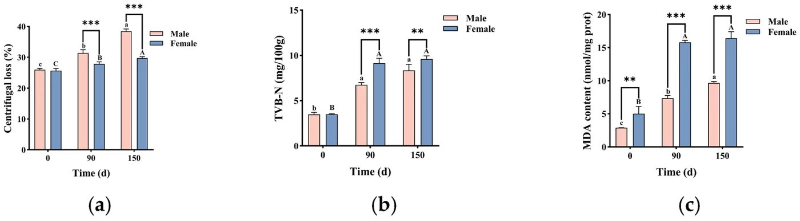
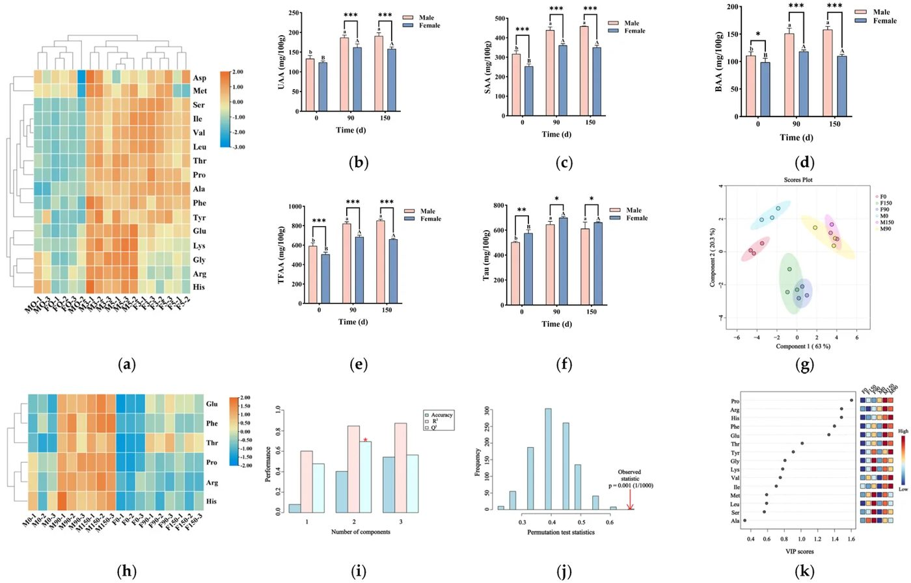
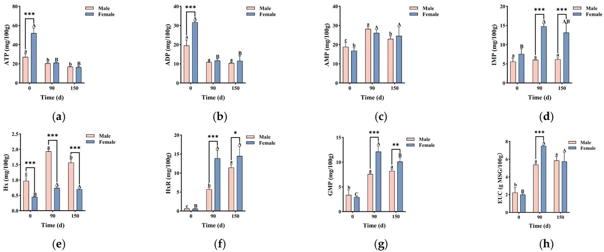
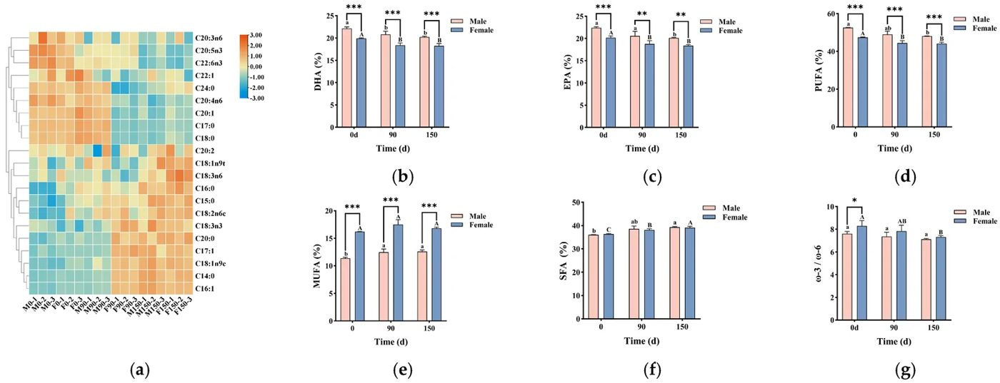
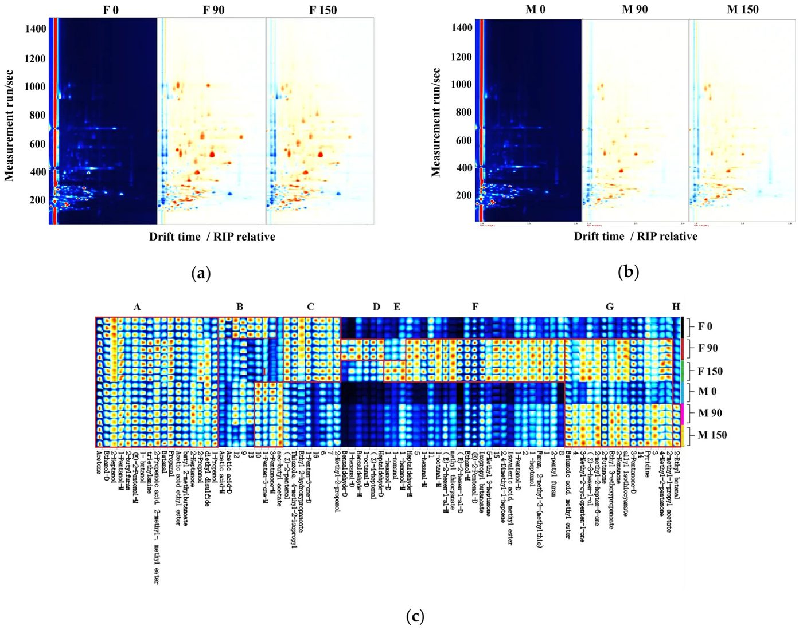
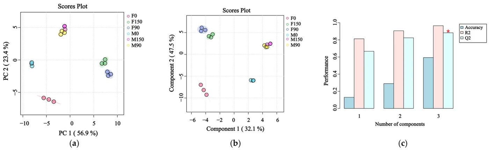
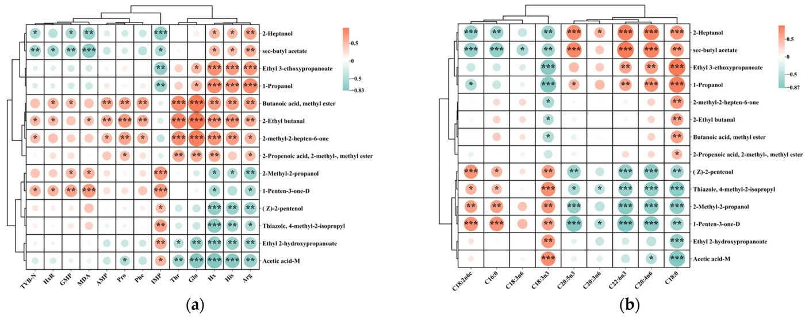

Urg‘ochi yoki erkak: nega ba’zi midiyalar muzlatgichda tezroq aynib qoladi


Rasmning to'liq tavsifi
Muzlatilgan holda saqlash davrida erkak va urgʻochi midiyalarning fizik-kimyoviy sifat koʻrsatkichlaridagi oʻzgarishlar. (a) Sentrifugal yoʻqotish. (b) Umumiy uchuvchan azot (TVB-N) miqdori. (c) Malondialdegid (MDA) miqdori. (d) ΔE. (e) Qattiqlik. (f) Chaynash qobiliyati. Eslatma: (a–f) da p < 0,01, * p < 0,001 ni anglatadi. Yuqori indeksdagi har xil kichik harflar (a, b, c) erkak midiyalarda saqlash muddatlari oʻrtasidagi sezilarli farqlarni (p < 0,05), yuqori indeksdagi har xil bosh harflar (A, B, C) esa urgʻochi midiyalarda saqlash muddatlari oʻrtasidagi sezilarli farqlarni (p < 0,05) bildiradi; d: kunlar.
Muzlatishdan oldin midiyalarni jinsiga ajratish g‘alati tuyulishi mumkin, ammo biokimyo buni to‘la tasdiqlaydi. -18 °C haroratda 150 kun saqlanganda qalin chig‘anoqli midiyalar (Mytilus coruscus) sifatini turlicha yo‘qotadi. Urg‘ochilarida yoqimsiz hid beruvchi aldegidlar va yog‘ oksidlanish mahsulotlari tezroq to‘planadi. Erkak midiyalar esa ko‘proq namlik yo‘qotsa-da, erkin aminokislotalar va umami ta’mini yaxshiroq saqlab qoladi.
Asosiysi
- 150 kunlik muzlatishda urg‘ochi midiyalarda yog‘ oksidlanishi erkaklarnikiga nisbatan 1,7 barobar ko‘p
- Erkak midiyalar ko‘proq suv yo‘qotadi, ammo aminokislotalar va to‘yimli ta’mini uzoqroq ushlab turadi
- 1-penten-3-on birikmasi to‘planishi foydali omega-3 yog‘ kislotalarining yemirilishi bilan bevosita bog‘liq
Batafsil
Tadqiqotda mart oyida yig‘ilgan va jinsiy bezlari faol rivojlangan Mytilus coruscus mollyuskalari o‘rganildi. Midiyalarning jinsi bezlar rangiga qarab ajratildi: urg‘ochilari to‘q sariq-sariq, erkaklari esa sutdek oq rangda bo‘ladi. Namunalar -18 °C da polietilen paketlarda 0, 90 va 150 kun davomida saqlanib, gaz xromatografiyasi-ion harakatchanligi spektrometriyasi (GC-IMS) orqali tahlil qilindi. 150 kundan so‘ng namlik yo‘qotilishi urg‘ochilarda 1,2 barobar, erkaklarda esa 1,5 barobarga ortdi. Umumiy uchuvchi asosli azot (TVB-N) mos ravishda 2,7 va 2,4 martaga oshdi.
Yog‘larning achib qolish ko‘rsatkichi — malondialdegid (MDA) — ikkala jinsda ham 3,3 barobar oshgan bo‘lsa-da, urg‘ochilardagi yakuniy miqdor erkaklarnikiga qaraganda 1,7 barobar yuqori bo‘lib chiqdi. Urg‘ochi midiyalarda 90 kundan keyin achigan hid beruvchi aldegidlar sezilarli darajada ko‘paydi. Spektrometriya 14 ta asosiy uchuvchi moddani ajratib ko‘rsatdi: xususan, MDA bilan bog‘liq bo‘lgan 1-penten-3-on ketoni eikozapentaen (EPA) va dokozageksaen (DHA) kislotalarining parchalanishi hisobiga keskin oshgan. Erkak midiyalar esa butun saqlash davrida erkin aminokislotalar zaxirasini yuqori darajada saqlab qoldi.
Cheklovlar
Tajriba faqat mart oyida (urug‘lanishdan oldingi davrda) yig‘ilgan bitta partiya midiyalarda o‘tkazildi; boshqa fasllardagi xomashyo boshqacha natija berishi mumkin.
Maqolaning to'liq tarjimasi
Annotatsiya
Qalin chanoqli midiya (Mytilus coruscus) — Xitoy qirgʻoqlari boʻylab keng yetishtiriladigan, iqtisodiy jihatdan muhim ikki pallali mollyuska hisoblanadi. «Xitoy baliqchilik statistik yilligi 2026» maʼlumotlariga koʻra, 2025-yilda Xitoyda midiyalarning dengiz akvakulturasi ishlab chiqarish hajmi 780 900 tonnaga yetdi. Yangi midiyalar oʻziga xos taʼmi va teksturasi uchun qadrlanadi, biroq ular saqlash jarayonida tez buziladi, bu esa ularning yaroqlilik muddatini, tarqatilishini va bozor qiymatini cheklaydi. Muzlatish suv mahsulotlarini uzoq muddat saqlash uchun keng qoʻllaniladi, chunki u mikroorganizmlar oʻsishini samarali toʻxtatadi va fermentativ reaksiyalarni sekinlashtiradi. Yuqori namlik va nozik toʻqima tuzilishi tufayli midiyalar uzoq muddatli muzlatish jarayonida sifatning yomonlashuviga moyil boʻlib, bu suv migratsiyasi, oqsil degradatsiyasi, lipidlar oksidlanishi va muz kristallari keltirib chiqaradigan strukturaviy shikastlanishlarga olib keladi, natijada suvni ushlab turish qobiliyati pasayadi hamda tekstura va taʼm profili oʻzgaradi.
Taʼm isteʼmolchi qabul qilishi va sensorli idrokka taʼsir qiluvchi muhim sifat koʻrsatkichidir. Aroma asosan uchuvchan organik birikmalar (UOB) bilan bogʻliq, taʼm esa asosan erkin aminokislotalar (EAK), organik kislotalar va 5′-nukleotidlar bilan belgilanadi. Uchuvchan va uchuvmas taʼm komponentlari chambarchas bogʻliq, chunki aminokislotalar, yogʻ kislotalari va boshqa taʼm kashshoflari (prekursorlari) qayta ishlash va saqlash jarayonida degradatsiyaga yoki oksidlanishga uchrashi mumkin. Eritish jarayonida qoldiq ferment faolligining tiklanishi oqsillar, 5′-nukleotidlar va boshqa komponentlarning transformatsiyasini yanada kuchaytirishi mumkin. Xususan, oqsillar va kichik peptidlarning degradatsiyasi EAK darajasini oʻzgartirishi mumkin, adenozintrifosfat (ATF) va uning hosilalarining konversiyasi esa adenozin-5′-monofosfat (5′-AMF), inozin-5′-monofosfat (5′-IMF) va boshqa taʼm beruvchi nukleotidlar tarkibini oʻzgartirishi mumkin. Shu bilan birga, toʻyinmagan yogʻ kislotalari oksidlanishga moyil boʻlib, aldegidlar, ketonlar va spirtlar kabi past molekulyar uchuvchan birikmalarni hosil qiladi, ularning baʼzilari achchiq hidlarga hissa qoʻshadi. Shunday qilib, muzlatish jarayonida taʼm evolyutsiyasi oqsil degradatsiyasi, nukleotidlar konversiyasi va lipidlar oksidlanishining birgalikdagi taʼsirini aks ettiradi.
Muhim
Midiyalarni muzlatish jarayonida taʼm evolyutsiyasi oqsil degradatsiyasi, nukleotidlar konversiyasi va lipidlar oksidlanishi kabi murakkab biokimyoviy jarayonlar bilan bogʻliq boʻlib, bu sensorli xususiyatlarning oʻzgarishiga olib keladi.
Izoh
UOB (uchuvchan organik birikmalar) — mahsulot xushboʻyligi uchun javobgar moddalar; EAK (erkin aminokislotalar) va nukleotidlar — taʼm (masalan, «umami») shakllanishida asosiy komponentlar.
Ehtiyot bo'ling
Tadqiqot kuzatuv xarakteriga ega: taʼm profilidagi oʻzgarishlar mollyuskaning jinsi va saqlash sharoitlari kabi koʻplab omillarga bogʻliq, bu esa kompleks tahlilni talab qiladi.
Oldingi tadqiqotlar koʻpincha bu koʻrsatkichlarni alohida oʻrgangan. Muzlatish jarayonida taʼm evolyutsiyasini toʻliqroq tavsiflash uchun uchuvmas taʼm birikmalari, yogʻ kislotalari tarkibi va UOBning integratsiyalashgan tahlili talab qilinadi. Gaz xromatografiyasi — ion-harakatchanlik spektrometriyasi (GX-IHS) tezkor tahlil va yuqori sezgirlik bilan ajralib turadi, bu esa uni uchuvchan taʼm profillarini monitoring qilish uchun mos qiladi. Saqlash muddatidan tashqari, xomashyoning jinsiy biologik farqlari ham taʼm reaksiyalariga taʼsir qilishi mumkin. Midiyalar ayrim jinsli boʻlib, koʻpayish davrida erkak va urgʻochi shaxslar gonadalarning rangi va sensorli xususiyatlari bilan ajralib turadi.
Ushbu tadqiqotda Mytilus coruscus urgʻochi va erkak shaxslari −18 °C haroratda 0, 90 va 150 kun davomida muzlatilgan holda saqlangan. EAK, 5′-nukleotidlar, ekvivalent umami konsentratsiyasi (EUK) va yogʻ kislotalari tarkibidagi oʻzgarishlar aniqlandi. Shu bilan birga, sifat oʻzgarishlari malondialdegid (MDA), umumiy uchuvchan asosli azot (UUAA), sentrifugalash yoʻqotishlari va tekstura xususiyatlari yordamida baholandi.
Yuqori samarali suyuqlik xromatografiyasi (YSX) darajasidagi erituvchilar Fisher Chemical (AQSH) kompaniyasidan xarid qilingan. MDA tahlili uchun toʻplam — Nankin biotexnologiya instituti (Xitoy). Aminokislotalar standartlari va derivatizatsiya toʻplami — Welch Materials Co., Ltd. (Shanxay, Xitoy). Nukleotidlar va organik kislotalar standartlari — Tanmo Quality Inspection Technology Co., Ltd. (Pekin, Xitoy). Standart yogʻ kislotalari metil efirlari (YAME) aralashmalari — ANPEL Laboratory Technologies Inc. (Shanxay, Xitoy). Ultra toza suv Milli-Q tizimi (Millipore, AQSH) yordamida tayyorlangan. Boshqa kimyoviy moddalar analitik darajada boʻlgan (Sinopharm Chemical Reagent Co., Ltd., Xitoy).
Izoh
YSX (yuqori samarali suyuqlik xromatografiyasi) — moddalar aralashmasini ajratish va tahlil qilish usuli boʻlib, aminokislotalar yoki nukleotidlar kabi alohida komponentlarning konsentratsiyasini aniq aniqlash imkonini beradi.
Tirik M. coruscus midiyalari 2025-yil mart oyida Shandun provinsiyasidan yigʻib olingan (yoshi 2–3 yil). Bu davrda midiyalar bahorgi tuxum qoʻyish mavsumi oldidan gonadalarning faol rivojlanish bosqichida boʻlgan. Namunalar laboratoriyaga taxminan 2 soat ichida sovutgichli qutilarda (4 °C) yetkazilgan. Dengiz suvi (shoʻrligi 28 PSU) bilan yuvilgandan soʻng, oʻrtacha oʻlchamdagi midiyalar tanlab olindi: chanoq uzunligi 97,99 ± 3,96 mm, kengligi 45,99 ± 2,87 mm, balandligi 31,88 ± 1,70 mm, tana massasi 48,96 ± 6,36 g. Jinsi vizual tarzda aniqlandi: toʻq sariq-sariq gonadalar — urgʻochi, sutsimon-oq — erkak. Ovqat hazm qilish trakti qoʻlda olib tashlandi. Har bir jins uchun 90 ta midiya uchta saqlash muddatiga (0, 90, 150 kun) taqsimlandi, har bir nuqtada 30 tadan. Har bir guruh 10 ta shaxsdan iborat uchta biologik takrorlanishga boʻlindi (n = 3). Midiyalar polietilen paketlarga (10 sm × 20 sm, qalinligi 0,20 mm) bir qatlam qilib joylashtirildi. Jismoniy oʻlchovlar uchun har bir takrorlanishdan 2 ta midiya, kimyoviy tahlillar uchun qolgan 8 ta midiya ishlatildi, ular suyuq azotda gomogenizatsiya qilindi va −80 °C da saqlandi.
Sentrifugalash yoʻqotishlari suvni ushlab turish qobiliyatini aks ettiradi. Eritilgan namuna (m1) filtr qogʻoziga oʻralib, pastki qismida paxta qatlami boʻlgan sentrifuga naychasiga joylashtirildi va 3000 ayl/min tezlikda 15 daqiqa davomida sentrifugalandi. Sentrifugalashdan soʻng namuna tortildi (m2). Hisoblash: Sentrifugalash yoʻqotishlari (%) = (m1 − m2) / m1 × 100%.
UUAA Xitoy standarti [27] boʻyicha aniqlandi. 3 g kukunsimon namuna 20 ml distillangan suv va 1 g magniy oksidi bilan aralashtirildi. Tahlil Kjeldahl azot analizatori (K1160, Hanon, Xitoy) yordamida amalga oshirildi.
MDA tiobarbitur kislotasi (TBK) usuli bilan toʻplam (A003-1, Nankin, Xitoy) yordamida aniqlandi. Midiya toʻqimalari fiziologik eritma bilan (1:9, ogʻirlik/hajm) muzli vannada gomogenizatsiya qilindi. Gomogenat 3500 ayl/min tezlikda (10 daqiqa, 4 °C) sentrifugalandi. Supernatant reagentlar bilan aralashtirildi, 95 °C da 40 daqiqa davomida qizdirildi, sovutildi va qayta sentrifugalandi. Absorbtsiya Multiskan SkyHigh spektrofotometri (Thermo Scientific, Singapur) yordamida 532 nm da oʻlchandi. Oqsil konsentratsiyasi Bradford usuli bilan aniqlandi. Natijalar nmol/mg oqsil koʻrinishida ifodalandi.
Rang parametrlari (L*, a*, b*) RM200QC spektrokolorimetri (X-Rite, AQSH) yordamida oʻlchandi. Umumiy rang farqi (ΔE) yangi namunalar (urgʻochilar uchun F0, erkaklar uchun M0) ga nisbatan hisoblandi: ΔE = √((L1 − L0)² + (a1 − a0)² + (b1 − b0)²). Tekstura tahlili (TPA) tekstura analizatori (CT3, Brookfield, AQSH) yordamida sferik zond (TA43, diametri 25,4 mm) bilan amalga oshirildi. Shartlar: test tezligi 1 mm/min, siqilish 20%, trigger kuchi 2 N.
EAK YSX usuli bilan 5% trixlor sirka kislotasi bilan ekstraksiyadan soʻng aniqlandi. Derivatizatsiya Yuexu toʻplami (Welch Materials, Xitoy) yordamida amalga oshirildi. Agilent 1260 tizimi va Ultimate Amino Acid ustuni (4,6 mm × 250 mm, 5 mkm) ishlatildi. Harakatlanuvchi faza A: 0,1 mol/l asetat buferi (pH 6,50) — atsetonitril (93:7); faza B: atsetonitril — suv (80:20). Oqim tezligi 1,00 ml/min, ustun harorati 40 °C, deteksiya 254 nm da. Taurin GB 5009.169-2016 boʻyicha aniqlandi.
Agilent 1260 tizimi va CAPCELL PAK C18 SG ustuni (4,6 mm × 150 mm, 5 mkm) ishlatildi. Harakatlanuvchi faza: 20 mmol/l fosfor kislotasi, 20 mmol/l limon kislotasi, 40 mmol/l trietilamin. Oqim tezligi 1,00 ml/min, deteksiya 254 nm da.
EUK (g monosodiy glutamat/100 g) formula boʻyicha hisoblandi: EUK = Σ(ai × bi) + 1218 × Σ(ai × bi) × Σ(aj × bj), bu yerda ai — umami aminokislotalari konsentratsiyasi (Asp, Glu), bi — yangilik koeffitsiyenti (Asp 0,077, Glu 1,0), aj — nukleotidlar konsentratsiyasi (IMF, GMF, AMF), bj — yangilik koeffitsiyenti (IMF 1,0, GMF 2,3, AMF 0,18).
Tahlil GB 5009.168-2016 boʻyicha oʻtkazildi. Lipidlar neft efiri bilan ekstraksiya qilindi, natriy gidroksidi bilan metanolda sovunlandi va bor trifloridi bilan metillandi. YAME Agilent 8890 gaz xromatografi va DB-Fast FAME ustuni (20 m × 0,18 mm, 0,20 mkm) yordamida tahlil qilindi. Harorat dasturi: 80–220 °C (25 °C/min), soʻngra 245 °C gacha (5 °C/min). FID detektori 250 °C da.
Uchuvchan birikmalar tahlili FlavourSpec® (G.A.S., Germaniya) asbobida oʻtkazildi. 2,00 g gomogenat 10 daqiqa davomida 60 °C da (500 ayl/min) inkubatsiya qilindi. Gaz-tashuvchi — azot. Identifikatsiya vaqt va drift vaqti boʻyicha NIST va IMS maʼlumotlar bazalari bilan solishtirildi.
Natijalar oʻrtacha ± standart ogʻish (n = 3) sifatida ifodalangan. Dunkan testi bilan bir faktorli dispersiya tahlili (ANOVA) (SPSS 26.0) ishlatildi. Grafiklar GraphPad Prism 10 da tuzildi. PCA va PLS-DA MetaboAnalyst 6.0 da bajarildi. Statistik ahamiyatlilik p < 0,05 darajasida qabul qilindi.
Rasmning to'liq tavsifi
Muzlatilgan holda saqlash davrida erkak va urgʻochi midiyalarning fizik-kimyoviy sifat koʻrsatkichlaridagi oʻzgarishlar. (a) Sentrifugal yoʻqotish. (b) Umumiy uchuvchan azot (TVB-N) miqdori. (c) Malondialdegid (MDA) miqdori. (d) ΔE. (e) Qattiqlik. (f) Chaynash qobiliyati. Eslatma: (a–f) da p < 0,01, * p < 0,001 ni anglatadi. Yuqori indeksdagi har xil kichik harflar (a, b, c) erkak midiyalarda saqlash muddatlari oʻrtasidagi sezilarli farqlarni (p < 0,05), yuqori indeksdagi har xil bosh harflar (A, B, C) esa urgʻochi midiyalarda saqlash muddatlari oʻrtasidagi sezilarli farqlarni (p < 0,05) bildiradi; d: kunlar.


Rasmning to'liq tavsifi
Muzlatilgan holda saqlash davrida erkak va urgʻochi midiyalarning erkin aminokislotalar profili va koʻp oʻlchovli tahlili. (a) Erkin aminokislotalar (FAA) issiqlik xaritasi. (b) Umami taʼmli aminokislotalar (UAA). (c) Shirin aminokislotalar (SAA). (d) Achchiq aminokislotalar (BAA). (e) Umumiy erkin aminokislotalar (TFAA). (f) Taurin (Tau). (g) PLS-DA ballar grafigi. (h) Tanlangan differensial FAA larning ierarxik klasterli issiqlik xaritasi. (i) PLS-DA modelining oʻzaro tekshiruv natijalari, yulduzcha () statistik ahamiyatlilikni (p < 0,05) koʻrsatadi. (j) PLS-DA modelining permutatsiya testi (n = 1000). (k) Asosiy diskriminant birikmalarni ajratib koʻrsatuvchi VIP ballar grafigi. Eslatma: (b–f) da * bir xil saqlash muddatidagi erkak va urgʻochi midiyalar oʻrtasidagi farqlarni bildiradi. * p < 0,05, p < 0,01, p < 0,001 ni anglatadi. Yuqori indeksdagi har xil kichik harflar (a, b) erkak midiyalarda saqlash muddatlari oʻrtasidagi sezilarli farqlarni (p < 0,05), yuqori indeksdagi har xil bosh harflar (A, B) esa urgʻochi midiyalarda saqlash muddatlari oʻrtasidagi sezilarli farqlarni (p < 0,05) bildiradi; d: kunlar.


Rasmning to'liq tavsifi
Muzlatilgan holda saqlash davrida erkak va urgʻochi midiyalardagi ATF bilan bogʻliq birikmalar va umami ekvivalenti (EUC) oʻzgarishlari. (a) ATF. (b) ADF. (c) AMF. (d) IMF. (e) Gipoksantin (Hx). (f) Inozin (HxR). (g) GMF. (h) EUC. Eslatma: (a–h) da * bir xil saqlash muddatidagi erkak va urgʻochi midiyalar oʻrtasidagi farqlarni bildiradi. * p < 0,05, p < 0,01, * p < 0,001 ni anglatadi. Yuqori indeksdagi har xil kichik harflar (a, b, c) erkak midiyalarda saqlash muddatlari oʻrtasidagi sezilarli farqlarni (p < 0,05), yuqori indeksdagi har xil bosh harflar (A, B, C) esa urgʻochi midiyalarda saqlash muddatlari oʻrtasidagi sezilarli farqlarni (p < 0,05) bildiradi; d: kunlar.


Rasmning to'liq tavsifi
Muzlatilgan holda saqlash davrida erkak va urgʻochi midiyalarning yogʻ kislotalari tarkibidagi oʻzgarishlar. (a) Yogʻ kislotalari metil efirlari (FAME) issiqlik xaritasi. (b) DGK (DHA). (c) EPK (EPA). (d) PUFA. (e) MUFA. (f) SFA. (g) ω-3/ω-6 yogʻ kislotalari nisbati. Eslatma: (b–g) da * bir xil saqlash muddatidagi erkak va urgʻochi midiyalar oʻrtasidagi farqlarni bildiradi. * p < 0,05, p < 0,01, * p < 0,001 ni anglatadi. Yuqori indeksdagi har xil kichik harflar (a, b) erkak midiyalarda saqlash muddatlari oʻrtasidagi sezilarli farqlarni (p < 0,05), yuqori indeksdagi har xil bosh harflar (A, B, C) esa urgʻochi midiyalarda saqlash muddatlari oʻrtasidagi sezilarli farqlarni (p < 0,05) bildiradi; d: kunlar.


Rasmning to'liq tavsifi
GC-IMS asosida muzlatilgan holda saqlash davrida erkak va urgʻochi Mytilus coruscus midiyalaridagi uchuvchan organik birikmalar (VOC) farqlarining grafiklari. (a) F0 nazorat guruhi sifatida olingan urgʻochi midiyalar guruhlari. (b) M0 nazorat guruhi sifatida olingan erkak midiyalar guruhlari. (c) GC-IMS maʼlumotlaridan hosil qilingan galereya grafigi. Eslatma: Galereya grafigida har bir qator namunani, har bir ustun esa VOC ni ifodalaydi. Rang har bir VOC ning nisbiy signal intensivligini bildiradi, u oqdan (past intensivlik) qizil ranggacha (yuqori intensivlik) oʻzgaradi; toʻq qizil rang nisbiy koʻpligining yuqoriligini bildiradi.


Rasmning to'liq tavsifi
(a) GC-IMS uchuvchan profillari asosidagi PCA. (b) VOC profillarining PLS-DA ballar grafigi. (c) Modelning bashorat qilish aniqligini koʻrsatuvchi oʻzaro tekshirish (CV) natijalari. Yulduzchalar (*) bilan belgilangan Q2 qiymatlari (bashorat qilish qobiliyati) statistik ahamiyatlilikni (p < 0,05) bildiradi, bu modelning tasodifiy tanlovdan ustunligini koʻrsatadi; (d) Model ahamiyatliligini tasdiqlovchi permutatsiya testi statistikasi (n = 1000) (p < 0,001). (e) Asosiy diskriminant birikmalarni ajratib koʻrsatuvchi VIP ballar grafigi. (f) Tanlangan differensial VOCʼlarning ierarxik klasterli issiqlik xaritasi.


Rasmning to'liq tavsifi
(a) Uchuvchan boʻlmagan taʼm beruvchi birikmalar (erkin aminokislotalar, TVB-N, MDA va 5′-nukleotidlar) va differensial uchuvchan birikmalar oʻrtasidagi Pirson korrelyatsiyasi issiqlik xaritasi. (b) Toʻyinmagan yogʻ kislotalari va differensial uchuvchan birikmalar oʻrtasidagi Pirson korrelyatsiyasi issiqlik xaritasi. Eslatma: Korrelyatsiya issiqlik xaritasida qizil rang ijobiy korrelyatsiyani, koʻk rang esa salbiy korrelyatsiyani bildiradi; toʻqroq ranglar kuchliroq korrelyatsiyani ifodalaydi. Yulduzchalar statistik ahamiyatlilikni bildiradi (* p < 0,05, p < 0,01, * p < 0,001).
Tadqiqot sxemasi
Maqola taqriz qilinadigan Foods (Basel, Switzerland) jurnalida nashr etilgan. Ammo bu ham bitta tadqiqot, yakuniy xulosa emas.
Manba
| Manba | Kategoriya | Litsenziya |
|---|---|---|
| Foods (Basel, Switzerland) (Europe PMC) | volatiles | CC BY 4.0 |
Manbalar
| Manba | Havola |
|---|---|
| Страница статьи | europepmc.org |
| Полный текст (PDF) | europepmc.org |
| DOI | doi.org |
| Метаданные Crossref | api.crossref.org |
| Europe PMC | europepmc.org |
| Иллюстрация | commons.wikimedia.org_collected_in_Shengsi,_China.jpg) |